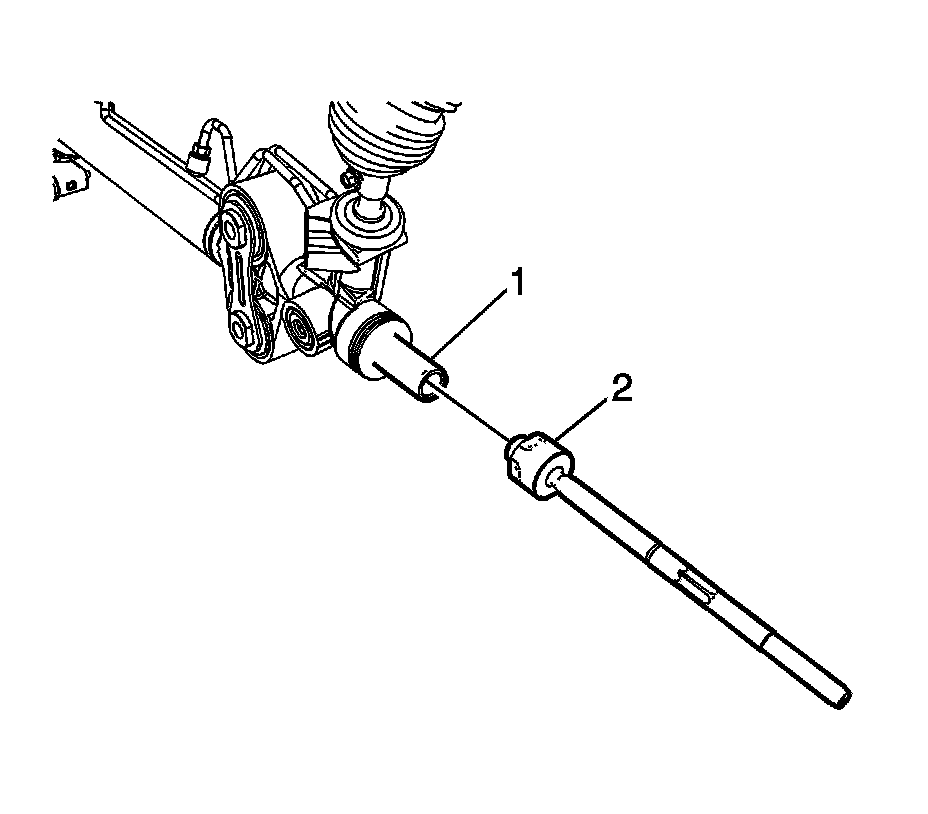

Rack and Pinion Inner Tie Rod Replacement
Rack and Pinion Inner Tie Rod Replacement
Removal Procedure

1. To remove the rack and pinion boot. Refer to Rack and Pinion Boot Replacement.
Notice: Do not change the steering gear preload adjustment before moving the inner tie rod from the steering gear. Changing the steering gear preload adjustment before moving the inner tie rod could result in damage to the pinion and the steering gear.
Notice: The pipe wrench must be placed at the valve end of the steering gear and positioned up against the inner tie rod housing. Placing the pipe wrench in any other location will cause damage to the steering gear.
2. Place a pipe wrench on the rack (1) next to the inner tie rod housing.
3. Place a wrench on the flats of the inner tie rod housing (2).
4. Rotate the inner tie rod housing (2) counterclockwise, while holding the rack stationary, until the inner tie rod separates from the rack (1).
Installation Procedure
Important: Threads must be clean prior to LOCTITE(R) application. Check LOCTITE(R), or equivalent, container for expiration date. Use only enough LOCTITE(R) to evenly coat threads.
1. Apply LOCTITE(R) 262, or equivalent, to the inner tie rod threads.
2. Attach the inner tie rod onto the rack.
Notice: Refer to Pipe Wrench Positioning Notice.
3. Place a pipe wrench on the rack (1) next to the inner tie rod housing (2).
Notice: Refer to Fastener Notice.
4. Tighten the inner tie rod housing (2).
Tighten the inner tie rod to 100 N.m (74 lb ft).
5. Install the rack and pinion boot.